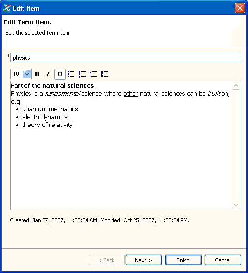
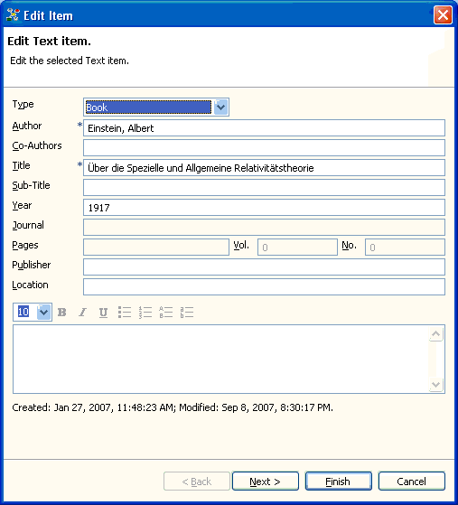
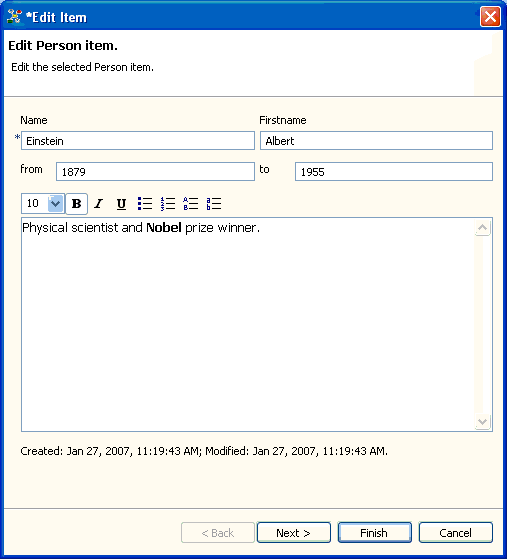

To change an items content, you have to make it editable. A handy tool for item editing is the Inspector. The Inspector, however, makes editable only a restricted set of an item's information, e.g. the text item's title field or the person item's text field.
For unrestricted editing, you have to call the item's editor. You can do this either by double clicking the item in the Relations browser or by clicking the edit action button () in the tool bar. The last approach will make the selected item editable.
Each item type provides its own item editor:

Editing a term item.

Editing a text item.

Editing a person item.